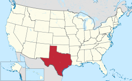
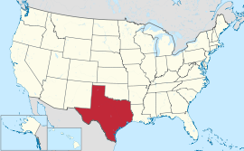
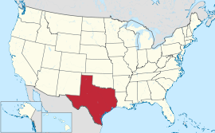

 
Texas is the second largest state in the United States by both area and population. Geographically located in the south central part of the country, Texas shares borders with the U.S. states of Louisiana to the east, Arkansas to the northeast, Oklahoma to the north, New Mexico to the west, and the Mexican states of Chihuahua, Coahuila, Nuevo León, and Tamaulipas to the southwest, while the Gulf of Mexico is to the southeast.
Learn more about Texas here!
